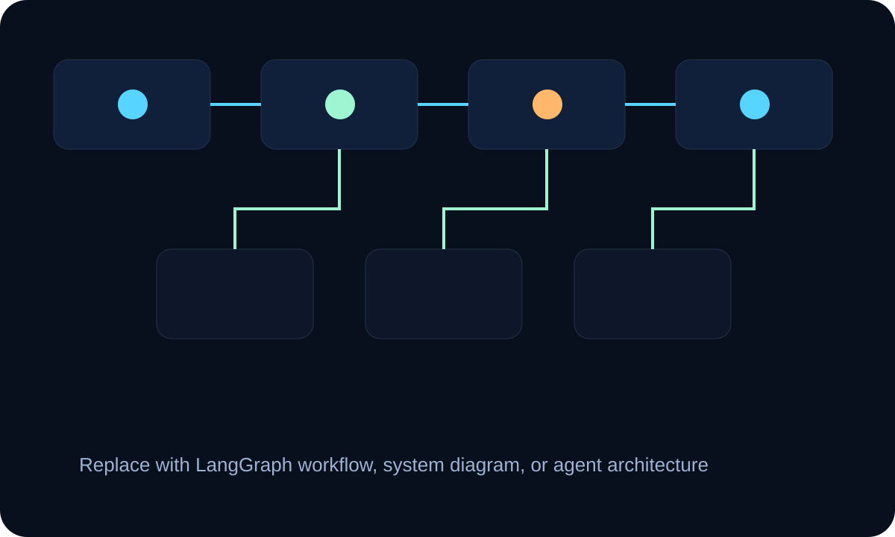
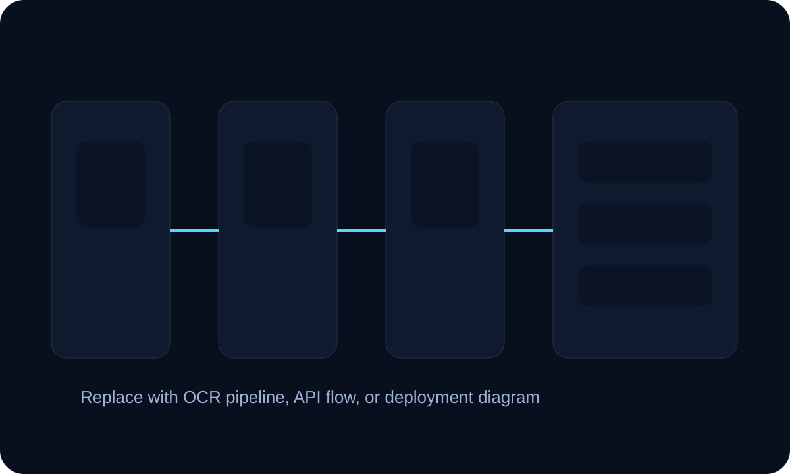
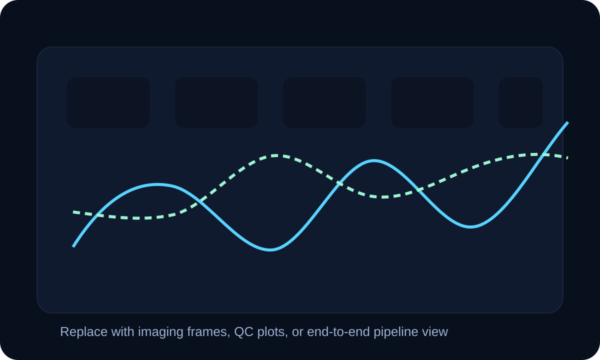

AI / ML Systems
I design applied ML systems that combine retrieval, orchestration, validation, and backend delivery. I care about whether the system is trustworthy, inspectable, and useful beyond the demo.
Seasoned engineering mindset for AI, software, and production systems
Santosh Mohan Jena
AI Software Engineer | AI/ML Engineer | Backend Engineer
I build AI-powered software systems, backend applications, and computational pipelines that turn complex data into usable intelligence.
I go by Sonny. I like building software systems that combine applied AI, backend engineering, and strong debugging discipline. My work is usually shaped by real constraints: messy data, imperfect first designs, and the need to make a system actually usable, maintainable, and trustworthy.
Tracks
This portfolio is organized around the work I actually do: building systems, analyzing data, and documenting how engineering decisions evolve under pressure.
I design applied ML systems that combine retrieval, orchestration, validation, and backend delivery. I care about whether the system is trustworthy, inspectable, and useful beyond the demo.
I build backend applications and data workflows with attention to schema design, maintainability, migration paths, and operational clarity.
I work on research-grade pipelines where correctness, synchronization, quality control, and scale all change how much you can trust the output.
I document what I built, what broke, what changed, and what I learned. It is the clearest place to see how I think when the work gets real.
About
I’m an M.S. Data Science student at the University at Buffalo building ML systems, backend applications, and computational neuroscience pipelines.
My work spans software engineering, AI/ML, and research-grade scientific workflows. I care about scalable systems, clean architecture, hard debugging, and rigorous analysis, especially in places where the data is noisy and the first design rarely survives unchanged.
I’m ambitious about growing into difficult engineering work, and I’m happiest when I’m learning fast, working hard, and improving systems that are still rough around the edges. The problems I enjoy most are the ones with friction: the backend that needs a cleaner structure, the pipeline that works until real data arrives, the retrieval flow that sounds convincing but still needs stronger safeguards, and the research workflow that has to be made reproducible before anyone should trust it.
Skills
Featured Projects
I want the project section to show more than features. It should show where the work got difficult and how the design changed because of that.
Agentic medical knowledge retrieval system using modular LangGraph workflows for retrieval, safety validation, and response generation.
I approached this as a systems problem, not just an LLM problem. Retrieval quality, safety, and orchestration had to be designed as first-class parts of the workflow.
Architecture Snapshot
FastAPI service with graph-based orchestration for retrieval, validation, and response flow.
Query intake, retrieval, context checks, safety validation, grounded generation, and audit output.
Preventing polished but weakly grounded responses in a sensitive medical setting.
Add stronger evaluation datasets, answer scoring, and failure routing for low-confidence queries.

Dockerized OCR and document-processing backend that transforms PDFs and images into structured JSON through scalable REST APIs.
This project is really about backend reliability under messy input. OCR quality, document variability, and storage design all affect whether the service stays maintainable.
Architecture Snapshot
Containerized backend pipeline separating ingestion, OCR, parsing, normalization, and storage.
REST endpoints for file submission, processing status, extracted JSON, and downstream retrieval.
Handling inconsistent document layouts without turning extraction logic into brittle heuristics.
Queue-based async processing and more robust schema validation for heterogeneous document types.

Scientific Computing + ML
End-to-end Python pipeline for calcium imaging analysis, signal extraction, ΔF/F normalization, deconvolution, feature engineering, and YOLO-assisted behavioral annotation.
The difficult part here was not just implementing stages. It was making sure the pipeline stayed inspectable and scientifically trustworthy while dealing with scale and synchronization issues.
Architecture Snapshot
Staged analysis pipeline for ingestion, motion correction, signal extraction, normalization, and QC.
Neural imaging outputs synchronized with behavioral frames and downstream feature engineering.
Scaling large TIFF-based workflows without losing timing integrity or scientific trust.
Stronger stage-by-stage memory control, better experiment metadata handling, and richer QC reporting.

Case Studies
I wanted this section to feel closer to how engineers actually talk about projects: what the job was, what got annoying, what failed, and what changed because of it.
MouseBase started from a practical problem. The lab needed a better way to keep track of breeding records, cage movement, pup tracking, procedures, and scheduling without everything getting scattered across spreadsheets and memory.
At first I thought the hard part would be building screens and forms. It turned out the real difficulty was the data model. Breeding history, cages, pups, procedures, and scheduling all touch each other, and every time I added one workflow I exposed another edge case I had not modeled well enough.
SQLite was good for getting the project moving, but it also made me face a bigger question: was I building something that could evolve cleanly, or just something that worked for now? The more records I imagined a lab accumulating, the more obvious it became that I needed to think beyond the first version.
My first versions were too direct. I added features quickly and let the schema follow along. That felt productive early on, but as more relationships showed up, the structure started fighting me.
Some tables were doing too much, and some boundaries were not thought through enough. Queries that should have been simple started turning into joins and conditions that were harder to reason about, and validation logic started leaking into places it should not have been.
I stepped back and rebuilt the structure around clearer entities and responsibilities. Once breeding, procedures, scheduling, and lineage tracking were separated more cleanly, the backend started making more sense again. It became easier to reason about queries, cleaner to extend, and more realistic to migrate later.
The biggest lesson was that the first schema is usually just your first understanding of the problem. I learned to think more seriously about change, growth, and migration instead of treating the early version as if it were already stable.
Backend quality is not only about whether the app works today. It is about whether the structure still holds when the project gets larger, the queries get harder, and the next engineer has to understand what you built.
The goal was never just to return a polished answer. I wanted a medical knowledge system that could retrieve useful context, stay structured, and avoid sounding confident when it should actually slow down or say less.
The first challenge was honesty. A simple retrieval pipeline can look impressive during a demo, but once the question gets messier or the retrieval quality drops, that same flow can become hard to trust very quickly. I kept seeing answers that sounded polished while leaning on weak or overly broad context.
I started with a straightforward retrieval-plus-generation setup because it was the fastest way to get something working. That helped me understand the problem, but it did not give me enough control over why an answer was produced or whether it should have been produced at all. Once I began thinking about medical use cases more seriously, that lack of control stopped feeling acceptable.
The better version came from breaking the workflow apart. Retrieval, validation, safety checks, and response generation became explicit stages instead of one blended step. Once those boundaries were visible, it became much easier to inspect the flow and improve it without guessing.
I came away from this project with a much stronger belief that AI systems live or die by their orchestration. A polished output is not the same thing as a reliable system.
Production AI needs restraint, structure, and validation. The useful work is often in designing the system around the model, not just choosing the model.
I wanted a backend service that could take PDFs and image documents and turn them into structured JSON through clean APIs, without depending on documents being neat or consistent.
The hard part was dealing with variability. OCR is noisy, document layouts are inconsistent, and the output still has to match a structure the rest of the system can rely on. A few files would work cleanly, then the next one would break because the scan quality, spacing, or layout was slightly different.
My early extraction logic assumed more regularity than real documents actually had. That made parsing brittle and pushed too much cleanup effort downstream. Tables, broken OCR tokens, and inconsistent field ordering made that obvious very quickly.
What helped was separating the pipeline into clearer stages: ingestion, OCR, normalization, storage, and API delivery. Once each piece had a more defined job, it became easier to test failures in the right place and improve one part without breaking the others.
One of the biggest lessons here was that backend reliability often comes from reducing hidden coupling. The more explicit the boundaries are, the easier the system is to debug and grow.
Most real systems do not get perfect input. A service becomes valuable when it can stay dependable even when the data coming in is not clean.
I needed an end-to-end pipeline for calcium imaging analysis that could handle ingestion, motion correction, signal extraction, normalization, deconvolution, and behavioral annotation without turning into a black box.
This was one of the clearest examples of how quickly scientific pipelines get complicated. Large TIFF stacks, alignment issues, synchronization between neural and behavioral data, and plain memory limits all showed up at once. Some runs were slow enough to force me to rethink how much I was trying to hold in memory at each stage.
There were also moments where I had to admit that parts of the scaling strategy were not working and could not be saved with small fixes.
My earlier passes were too monolithic. They made it harder to isolate memory-heavy stages and easier to miss subtle issues in alignment and synchronization. That was frustrating because a pipeline can keep running while still quietly damaging the quality of the downstream analysis. I also ran into moments where frame counts or timing assumptions did not line up cleanly, which forced me to inspect the workflow more carefully instead of trusting the output.
The better direction was a more staged pipeline with stronger quality checks and clearer data flow between each part. Once I treated validation as part of the pipeline instead of an extra step at the end, both debugging and interpretation improved.
This work taught me that scaling is not only a compute problem. In scientific systems, it is also a correctness problem. If you scale a weak assumption, you just get a bigger error.
Research pipelines deserve the same engineering discipline as product systems. If the workflow is not reproducible and inspectable, the science becomes harder to trust.
Engineering Mindset
I prefer to make responsibilities explicit early: where data enters, where validation belongs, where state lives, and which parts of the system should stay independently testable.
Whether the work is AI or scientific computing, I look for stages that can be inspected, benchmarked, replaced, and debugged without destabilizing everything else.
I reduce uncertainty by isolating failure surfaces, verifying assumptions at interfaces, and instrumenting the pipeline before guessing at fixes.
I care about evaluation because clean-looking outputs can still be wrong. That mindset comes from both ML workflows and scientific data pipelines where downstream trust depends on upstream rigor.
I think carefully about performance versus simplicity, local development speed versus long-term scalability, and shipping now versus creating technical debt that will slow the next iteration.
I enjoy translating research logic into working systems. That means turning vague concepts into interfaces, data contracts, validation steps, and repeatable engineering process.
Guiding Lines
“When something is important enough, you do it even if the odds are not in your favor.”
“I will prepare and some day my chance will come.”
“One individual may die for an idea, but that idea will, after his death, incarnate itself in a thousand lives.”
Blog
I use the blog to document real iteration: what shipped, what failed, what I misunderstood, and what changed in the design because of it.
Life Outside Code
This section adds personality without taking attention away from the technical work.


Experience
Research Aide – Computational Pipelines and Analysis
Roy Lab, University at Buffalo
Data Science Consultant, Engineering
Rubxie AI Solutions
Project Sales Engineer
Perrigo India International
Contact
If you’re hiring for work that spans intelligent systems, backend engineering, or scientific computing, I’d be glad to connect.